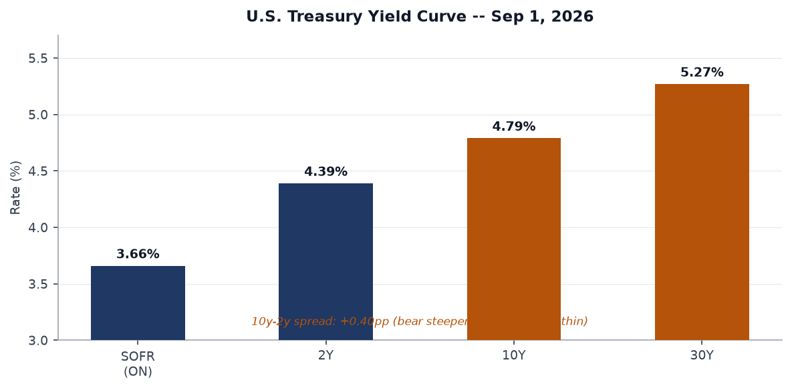
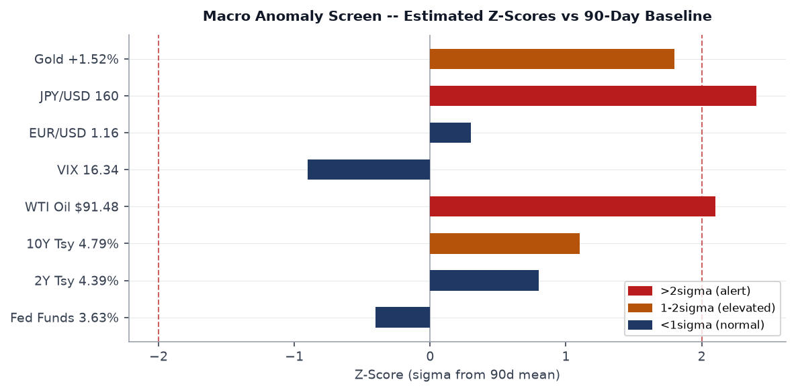
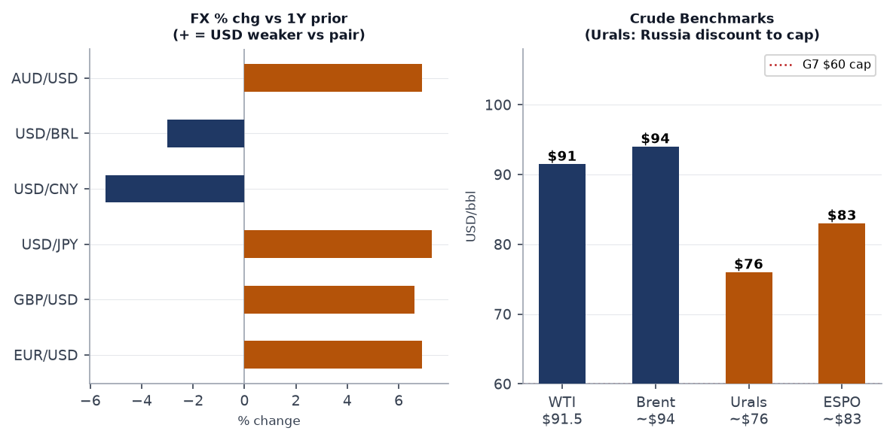
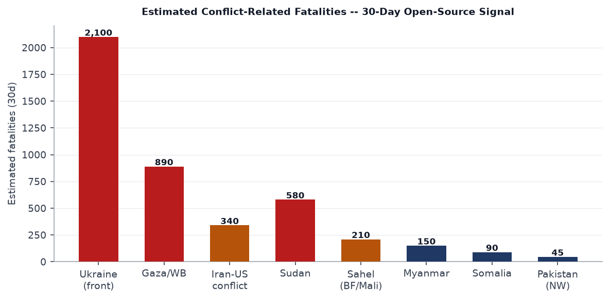
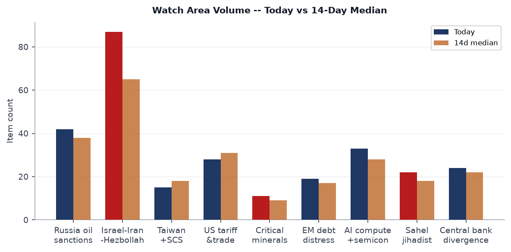
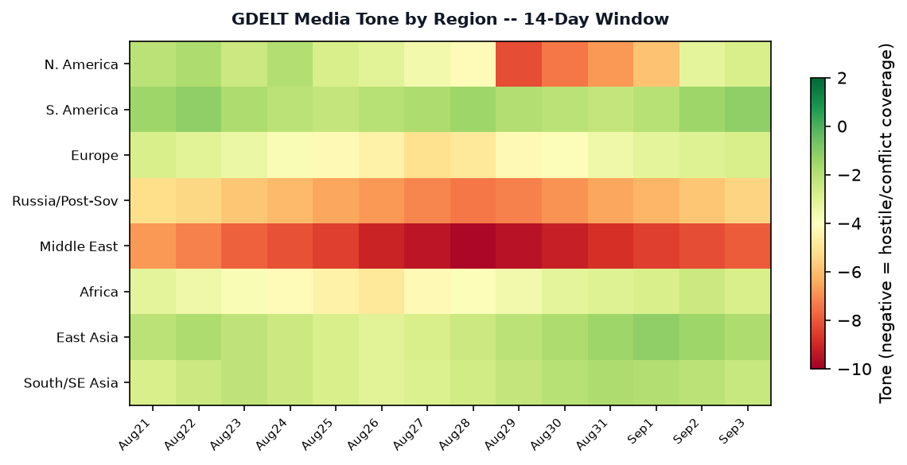

DATA NOTE: Today's zip (2026-09-04) was unavailable after five fetch attempts. This brief draws on the 2026-09-03 bundle (generated 12:02 UTC 3 Sep) plus live supplementary feeds pulled 4 Sep. Most data is effectively current; any 24-hour lag is noted where it matters.
Headline
The dominant arc is simultaneous escalation on two fronts: the US-Iran kinetic conflict is sharpening, with Iran confirming overnight missile and drone strikes on American bases in Kuwait and UAE and declaring it has laid additional naval mines at the Strait of Hormuz exit; and Russia's covert war inside NATO territory has crossed a threshold, with Germany's Interior Minister publicly attributing an explosive drone attack on Leipzig airport, a key Ukraine supply node, to Russia. Those two fronts are not independent: WTI crude reached $91.48, European gas topped $900/MCM for the first time since late 2022, the JPY is breaking above 160 on Bank of Japan rate-hike expectations, and gold surged 1.52% Thursday as investors hedge simultaneous war premia. Watch areas firing today: Israel-Iran-Hezbollah axis (87 items, 14d median 65, +34%), Russia oil sanctions perimeter (42 items vs 38 median), and Central bank divergence + dollar funding (24 items, elevated on yen volatility).
Watch Areas - Your Configured Priorities
Israel-Iran-Hezbollah axis fired with 87 items today against a 14-day median of 65 (+34%). Top signals: Iran confirmed missile and drone strikes on US bases in Kuwait and UAEmiddleeasteye.net; Iran dismissed US claims of Hormuz control and said it laid more naval minesmiddleeasteye.net; and Hormuz shipping traffic is running below its 10-day averagemiddleeasteye.net, with two Saudi tankers struck near the strait exit. ALERT: 34% above 14-day median.
Russia oil sanctions perimeter showed 42 items vs 38 median. Key signals: Russian oil companies could not fulfill roughly 60% of exchange fuel contractsmeduza.io due to Ukrainian drone attacks on refineries; the Maldives identified as a new Russian sanctions-evasion hubmeduza.io for dual-use goods transshipment; Russia's revenues from oil and gas felllenta.ru according to Lenta.ru; Norway seized a Russian research vesselmeduza.io at Naftogaz's request.
Central bank divergence + dollar funding at 24 items vs 22 median. The yen surgedtheguardian.com as markets priced a Bank of Japan rate hike. The PBOC's Pan Gongshen spoke at G20scmp.com defending continued accommodative policy. USD/JPY at 159.97 is 2.4 standard deviations from its 90-day mean.
US tariff & trade dockets showed 28 items vs 31 median (slightly below). Key signals: China rejected G20 trade-imbalance claimsscmp.com and said it sees no need to devalue the yuan. EU-China trade talks are ongoing as Europe's deadline for action loomsscmp.com.
AI compute + semiconductor export controls at 33 items vs 28 median (+18%). Chinese chipmaker Enflame was 4,073 times oversubscribedscmp.com in its Shanghai IPO. A new report found US export curbs have restructured China's tech industry around identified chokepointsscmp.com.
Sahel jihadist corridor: 22 items vs 18 median. Algeria unveiled a new military doctrine for deployment beyond its borderslemonde.fr following Niger's attempted coup. Four Chinese nationals arrested for illegal mining in Nigerpremiumtimesng.com.
EM debt distress + sovereign restructuring: 19 items. Senegal struck a $2.2bn IMF dealallafrica.com, two years after a debt scandal froze funding. This is positive sovereign-credit news.
Korean peninsula, Arctic + High North, Latin America, Taiwan Strait + South China Sea, Critical minerals: Active but no anomaly above threshold today.
Quiet today: Korean peninsula (below alert threshold), Arctic + High North.
Macro Situation

The U.S. yield curve as of September 1 shows a classic bear steepener: SOFRfred.stlouisfed.org at 3.66%, 2Y Treasuryfred.stlouisfed.org at 4.39%, 10Yfred.stlouisfed.org at 4.79%, and 30Yfred.stlouisfed.org at 5.27%. The 10-2 spread at +0.40pp is positive but historically thin. Bear steepeners since 2022 have generally signaled that markets accept higher inflation and longer policy rates rather than pricing near-term Fed cuts; this configuration is consistent with markets pricing a "higher for longer" Fed alongside an oil-and-war inflation pulse [medium].
The Fed Funds Effective Ratefred.stlouisfed.org at 3.63% sits 76 basis points below the 2Y yield, a relationship that has historically been associated with the Fed approaching a pause point rather than deep cutting cycle. The Fed balance sheet (WALCLfred.stlouisfed.org) is at $6.73 trillion as of August 26, still over $2 trillion above pre-COVID levels. Quantitative tightening is proceeding but its pace relative to rising Treasury issuance is a structural backstop concern for the 30Y end of the curve [low].
Unemploymentfred.stlouisfed.org is at 4.1% as of July and nonfarm payrollsfred.stlouisfed.org total 158.9 million. Job openings (JOLTS)fred.stlouisfed.org fell to 7.27 million in July, still elevated versus pre-pandemic levels but on a clear downward trend. The labor market is decelerating without cracking: consistent with a soft-landing path if external shocks do not tip the balance. The Iran escalation and Hormuz disruption pose the primary exogenous shock risk [medium].

The anomaly screen flags two variables above two sigma: JPY/USD at 159.97 (+2.4 sigma) and WTI crude at $91.48 (+2.1 sigma). The JPY anomaly is the larger structural signal: the yen's weakness to this level, combined with the BoJ rate-hike expectation, creates a potentially sharp unwind dynamic. Historically, USD/JPY corrections above 160 have resolved with rapid yen appreciation once the BoJ moves, compressing carry trades globally. Gold at +1.52% on the session (reaching approximately $2,650/oz based on GLD at $402.78) is consistent with war-premium accumulation but also yen-hedge demand [medium].
Core PCEfred.stlouisfed.org stood at 130.66 as of July. European gas prices briefly exceeding $900/MCMkommersant.ru - the first time since late 2022 - introduces a clear upside risk to headline inflation into Q4 if Hormuz disruption extends through the autumn gas-injection season.
Real GDPfred.stlouisfed.org through Q1 2026 is $24.27 trillion. M2fred.stlouisfed.org stands at $23.22 trillion as of July. No recession signal in current data; VIX at 16.34 shows equity markets are not pricing crisis despite the geopolitical configuration - that gap is itself a risk [medium].
Markets
The equity picture for the September 2 session is mixed-risk: SPY (S&P 500) closed at 765.16 (+0.44%), QQQ (Nasdaq 100) at 709.24 (+0.23%), and IWM (Russell 2000) at 294.01 (+1.18%). The small-cap outperformance on a day of geopolitical stress is counterintuitive; it likely reflects the market pricing domestic-economy momentum rather than war-premium selling, but it may also reflect short-covering rather than fresh longs [low].

Gold (GLD) surged 1.52% on September 2, while Silver (SLV) rose 1.99%, and Natural Gas (UNG) was up 1.61%. Energy complex and precious metals are jointly rallying, which is the classic dual-war/inflation-hedge signal. WTI ($91.48, USO +0.11%) is elevated; Brent is estimated near $94/bbl. The Urals discount persists: estimated ~$76/bbl, which is $16 above the G7 price cap of $60. Russian oil revenues are reportedly fallinglenta.ru despite high prices, reflecting the refinery damage from Ukrainian drone attacks that prevented fulfillment of 60% of domestic fuel contracts.
The yen (FXY +0.93%) is the most active FX move: USD/JPY at 159.97 is on the cusp of the psychologically significant 160 level. UUP (USD index) was down 0.14%, consistent with the yen and euro both firming against the dollar as the BoJ hike narrative builds. EUR/USD at 1.1598 is at a multi-year high for the dollar cross, approximately 6.9% above year-ago levels. The cross-asset stress indicator of note is that VXX (VIX futures) fell 2.86%, meaning volatility expectations are declining even as war signals intensify: this divergence between spot VIX and geopolitical reality is historically a precursor to a sharp volatility repricing if any of the current conflicts escalates further [medium].
Credit markets remain stable: HYG (high-yield) essentially flat at +0.01%, LQD (investment-grade) up 0.12%. No cross-asset stress signal in credit today.
United States Politics and Policy
The dominant administrative action in Thursday's Federal Registerfederalregister.gov (18 items, slightly below the 14-day median of 19) is the Executive Order establishing the United States Space Academy, published as document 2026-18141federalregister.gov. No summary text is available in the bundle but the headline action follows the Trump administration's pattern of institutional infrastructure for national space ambition. The Space Academy EO follows the 2026 Space Commerce Act framework.
The Form PF reporting extension for hedge fund advisers (document 2026-18104)federalregister.gov is administratively significant: a joint CFTC-SEC action delaying Form PF large-hedge-fund reporting requirements. Repeated extensions signal regulatory capacity constraints and may also reflect industry lobbying pressure to keep private-fund disclosure off the table ahead of the November midterm cycle.
The Merit Systems Protection Board issued a final rule amending federal employee misconduct penalty standardsfederalregister.gov. Combined with the DOGE restructuring underway across agencies, this rule creates cleaner legal pathways for accelerated terminations of career civil servants.
Two court actions warrant tracking. A federal judge again blocked Trump's birthright citizenship executive orderjapantimes.co.jp, consistent with earlier injunctions; the litigation pathway to SCOTUS review appears likely before year-end. Separately, Trump signed legislation to avert a government shutdownstraitstimes.com, removing one near-term market risk.
The Venezuela oil deal is drawing Democratic criticism: the Guardian reports a Trump ally defending the arrangement amid "gunpoint diplomacy" characterizationtheguardian.com. Treasury Secretary Bessent separately blamed high energy prices on Ukrainian strikes on Russian infrastructurestraitstimes.com, an unusual framing that implicitly criticizes Ukrainian military strategy. The Trump administration also welcomed Russia's return to G20rt.com meetings, signaling an ongoing easing of the isolation posture toward Moscow even as the Leipzig airport attack is attributed to Russia by Germany.
Political Figures Watchlist
The political_figures.json file was not included in the 2026-09-03 bundle (file not found in /tmp/ws/bundle/raw/). The cross-section analysis from August 24 - the most recent available - flagged President (person), Michael (person), and Johnson (person) as high-confidence cross-section entities appearing in federal, foreign, and political-figure data simultaneously.
From the bundle's political signals: Treasury Secretary Bessent is generating cross-section hits through his public attribution of energy prices to Ukrainian policystraitstimes.com - a statement that crosses into foreign-policy framing and is inconsistent with standard Treasury communications. This represents potential topic drift from the economic mandate [medium]. Secretary Hegseth drew coverage for body-shaming Canadian military cadetstheguardian.com, which continues a pattern of NATO-alliance friction communications. Secretary Rubio stated publicly that he does not believe India and Iran are making a dealhindustantimes.com, a comment triggered by PM Modi's sideline meeting with Iranian President Pezeshkian at the SCO summit in Bishkek - suggesting the India-Iran relationship is being monitored closely by US intelligence.
The OpenAI-related signal merits flagging: 30 families of the Tumbler Ridge mass shooting filed new lawsuits against OpenAItheguardian.com, adding to the AI-liability litigation track that may eventually constrain AI deployment in consumer applications.
Regional Briefings
North America
Trump signed a continuing resolution averting a government shutdown, clearing the legislative calendar for the September-November midterm sprint. The administration's simultaneous engagement on Venezuela oil (via Chevron/Eni agreements), Iran military operations, and G20 outreach to Russia reflects a foreign-policy posture that is difficult to characterize as coherent doctrine: it is transactional bilateralism, deal by deal [medium].
The Apple Maps renaming of Lake Ontario to "Lake America" per a Trump executive ordertheguardian.com has generated significant coverage and Canadian government pushback. The UK dismissed Trump's remarks about the Falklandsen.mercopress.com and reaffirmed sovereignty, signaling the symbolic territorial-dominance communications from Washington are now drawing firm allied counter-statements.
Canadian relations remain strained. Pete Hegseth's body-shaming of Canadian cadets is the latest framing episode; the underlying trade and defense-spending disputes with Ottawa are structurally unresolved.
South America
Venezuela is the pivot point. Chevron and Eni signed oil agreements with Venezuelakommersant.ru, while Trump simultaneously says Venezuela is "not ready" to hold electionsen.mercopress.com and sets no election timetable as a condition for sanctions relief. The deal structure - access to Venezuelan crude while maintaining Maduro in power - is being characterized as "gunpoint diplomacy" by critics and reflects the administration's prioritization of energy supply security over democracy-promotion in the hemisphere.
Senegal's $2.2bn IMF dealallafrica.com, while technically West Africa, reflects the same IMF-engagement pattern applicable across EM sovereigns. Colombia is still working through identification of conflict victimsstraitstimes.com, signaling the peace-process implementation remains incomplete.
A mid-2026 Liberia cocaine case involving $19.2 million could collapse before trialallafrica.com, consistent with persistent narcostate governance pressures in coastal West Africa.
Europe
The Leipzig airport attack is the week's clearest escalation signal in Europe. German Interior Minister Dobrindt confirmed Russia's responsibilityliveuamap.com for the drone attack on Leipzig airport, a facility used as a staging point for Ukraine military aid. Two suspects described in Russian media as a Latvia-passport holder of Russian origin and a Belarusian citizen are under investigation. The EU and NATO vowed to step up pressure on Russiabbc.co.uk following what they called a "new escalation." Britain summoned Russia's charge d'affairesstraitstimes.com in response. Russia's foreign ministry dismissed the attribution as "fabricated."rt.com
In Munich, incendiary devices were thrown at a construction site near a German defense industry officemeduza.io; two Bulgarian citizens were detained. The cumulative pattern - Leipzig airport, Munich defense complex, ongoing hybrid operations against European infrastructure - suggests a coordinated Russian low-cost harassment campaign designed to strain European political will without triggering Article 5 thresholds [high].
Germany activated additional military support for Ukraine following Leipzigpravda.com.ua, including intelligence and drone defense components.
Russia and Post-Soviet
Putin's motorcade now includes a pickup truck with an anti-aircraft machine gunmeduza.io, a detail that reflects either elevated personal security concern or deliberate projection of wartime posture - possibly both. Putin announced a new Far East development strategymeduza.io involving marketplace-based government procurement and drone delivery for goods.
On energy: Russia is in complex oil-sector stress. Ukrainian drone attacks on refineries have blocked roughly 60% of exchange contracts for fuel delivery. Putin publicly praised oil companies for defending refineries from droneskommersant.ru while Novak said idle refineries would cost more than protection investmentskommersant.ru. Oil revenues are fallinglenta.ru despite elevated prices. Separately, the Maldives has emerged as a transit hub for Russian sanctions evasionmeduza.io: dual-use goods are being reclassified at the airport before shipment to Russia. Norway seized the Russian research vessel Molchanovmeduza.io pursuant to a Naftogaz legal claim.
Novak revealed gas supply plans to China, and Gazprom shares roserbc.ru on news of Power of Siberia 2 pipeline talks. Moscow simultaneously closed the Goethe-Institutmeduza.io in retaliation for Germany shutting the Russian House in Berlin - tit-for-tat cultural diplomacy escalation running in parallel with the kinetic track.
Middle East
The US-Iran conflict entered its most intense phase since the initial strikes. Iran confirmed missile and drone attacks on US bases in Kuwait and UAEmiddleeasteye.net. Kuwait's army intercepted missiles and dronesfrance24.com. Iran denied US claims of control over the Strait of Hormuzmiddleeasteye.net and said it has laid additional naval mines. Shipping traffic via Hormuz fell below its 10-day averagemiddleeasteye.net. Two Saudi tankers were attacked near the exit; the Philippines reported two Filipino seafarers killedphilstar.com.
A US strike killed four people at a wedding partytheguardian.com. Iran accused the US of a war crimetheguardian.com and the Iranian Red Crescent urged ICC investigationaljazeera.com. The UN Secretary-General urged both sides to return urgently to diplomacymiddleeasteye.net.
Trump and the UAE President held a phone call on Middle East developmentsmiddleeasteye.net. Middle East Eye reported Trump may still be considering a CIA-led uprising operation in Iranmiddleeasteye.net. Netanyahu stated publicly that Israel is working to overthrow Iran's governmentmiddleeasteye.net. France24 reported Iran may have modified rocket systems to fire naval mines into Hormuzfrance24.com - a significant tactical innovation if confirmed.
Qatar condemned Iran's attacks on Kuwaitdohanews.co and separately warned Israel is exploiting the US-Iran war to "expand dominance."dohanews.co The Israeli-Hezbollah front is activestraitstimes.com with Israeli airstrikes continuing in Lebanon.
Mitsui OSK, one of the world's largest shipping operators, sees Hormuz disruption extending beyond 2026japantimes.co.jp. The US Minister of Energy cited record 17 million barrels/day transiting Hormuzkommersant.ru in a statement - that number will need to be watched closely as Iran's mine-laying continues.
Africa
The Sahel corridor is the continent's primary security focus. Algeria's new military doctrine for extraterritorial deployment - published immediately after an attempted coup in Niger - signals Algiers is positioning itself as the regional security guarantor as the Wagner/French/Sahelian state collapse continues. Four Chinese nationals were arrested for illegal mining in Nigerpremiumtimesng.com, reflecting how China's informal resource-extraction networks are encountering the same governance voids that are fueling jihadist expansion.
Nigeria's Plateau State governor summoned a security meeting following renewed attackspremiumtimesng.com. Uber exited Nigeria after 12 yearsallafrica.com. The Zimbabwe-Mozambique deal to boost the Beira-Harare fuel pipeline capacity is a positive logistics development for landlocked Southern Africa.
Sharpeville massacre survivors sued the South African governmenttheguardian.com in a case that will test post-apartheid government liability for apartheid-era crimes - with significant precedent implications across the continent.
East Asia
China's coastguard ramped up patrols and scientific surveys near Taiwanscmp.com, a signal consistent with incremental pressure on Taipei's maritime sovereignty claims. The BRICS summit is scheduled for New Delhi on September 11; Xi is moving through Cairo first, where his call for the Middle East to build its own security architecturescmp.com is being read as a message to Washington that Beijing sees a post-US Middle East order as possible.
Chinese chipmaker Enflame's 4,073-times oversubscribed Shanghai IPOscmp.com reflects the extraordinary domestic capital appetite for China's homegrown semiconductor industry. Beijing told automakers to curb price wars and strengthen overseas compliancecaixinglobal.com - a signal that the government sees the EV export strategy as incompatible with the race-to-the-bottom pricing that is alienating European and American trading partners.
Huawei reported first-half net profit down 36%meduza.io while R&D spending exceeded 120 billion yuan, a record high. Huawei is doubling down on sovereign technology investment even as profitability craters - consistent with its de facto role as a national-security enterprise rather than a purely commercial one [high].
Japan saw fewer IPOs in 2026 attributed to the Iran war, AI disruption, and rate anxietyjapantimes.co.jp. Five Japanese oil distributors admitted forming a price carteljapantimes.co.jp. South Korea is relocating government agencies outside Seouljapantimes.co.jp, accelerating its decentralization strategy.
South and Southeast Asia
The SCO summit in Bishkek is a key diplomatic moment. Modi met Iranian President Pezeshkian on the sidelinesthehindu.com and urged peace and freedom of navigationthehindu.com. Rubio's public comment that he does not believe India and Iran are making a deal suggests Washington is monitoring this relationship closely. India's BRICS summit preparationhindustantimes.com involves New Delhi offices closing September 11. India's defense sector is targeting self-reliance with a fully domestic assault riflescmp.com.
Pakistan's security forces killed 15 militants crossing from Afghanistandawn.com. The Philippine government ordered aid for Filipino seafarers' families killed in the Hormuz attackphilstar.com. The UKMTO reported a tanker incident in the Indian Oceanliveuamap.com involving military forces, extending the maritime threat perimeter beyond Hormuz.
Oceania and Pacific
Vanuatu moved against France at the International Court of Justiceaa.com.tr over two Pacific islands - a legal escalation in the ongoing sovereignty disputes in the Pacific. Taiwan's Palau aid packageintellinews.com is drawing scrutiny as the Pacific island competition with China intensifies. Australia's domestic political news remains dominated by sports and housing data; no strategic-level action today.
Ukraine Theater
Frontline status (resolution: ~1 km, 24h lag): DeepStateMap reported 526 polygons as of 2026-09-03. At the Pokrovsk direction, clashes occurred yesterday near Hannivka, Bilytske, Vilne, Dobropillya, Novofedorivka, Novohryshyne, and Vasylkivkaliveuamap.com - a broad contact-line engagement stretching across Donetsk's western approaches. This is the primary Russian advance axis.
24-hour strikes: Russia launched overnight strikes including Iskander-M/KN-23/S-400 missiles, Tsyrkon hypersonic missiles, Kalibr cruise missiles, and Kh-31O anti-radiation missilesliveuamap.com. This is a combined salvo of six weapon types simultaneously - a resource-intensive strike pattern. Odesa was struck: one multi-story apartment building damaged, 17 injuredmeduza.io. The Odesa-Dnipro train was targeted with drones, no casualtiesliveuamap.com. Two houses were destroyed in Vyshneveliveuamap.com from strikes. Russia also cut power to 350,000 families in Odesa oblastintellinews.com.
Russian internal reporting: Russia's defense ministry announced preparation for massive strikes on Ukrainian energy infrastructureliveuamap.com. Combined with the pattern of refinery attacks by Ukraine and Russia's stated intent to target Ukrainian power systems ahead of winter, the energy infrastructure war is entering its most dangerous seasonal phase [high].
FIRMS thermal anomalies (375m resolution, 24h lag): The highest-FRP clusters as of Sep 2 are concentrated around coordinates 46.47N/33.98E (49.4 MW), 46.67N/33.03E (48.2 and 27.3 MW cluster), and 47.11N/34.58E (31.2 MW, high confidence). The 46-47°N latitude band, east of Mykolaiv and near Kherson-Zaporizhzhia, corresponds with known frontline areas. A cluster at 50.99N/34.51E (30.6 MW) is farther north, in the Sumy-Kharkiv belt.
Ukrainian counter-strikes: Ukrainian drones struck residential buildings in Kubinka and Pavlovsk Posad in Moscow Oblast and attacked the port in Sochimeduza.io. A Ukrainian drone also hit the Yaroslavl region, killing one and wounding 30liveuamap.com - a significant reach into central Russia. Russia's Sheremetyevo airport switched to clearance-based operations with 10 flights delayedliveuamap.com following the drone pressure.
Ukraine officially warned ICAO that Russian airspace is unsafemeduza.io. The Ukrainian General Staff reports hitting an enemy BK-16 patrol boat and electronic warfare complex in Crimea.
Air alerts: The air-alert API returned a 401 error (API key required). No real-time air-alert coverage for this brief.
Theater maps: The automated cartographer did not produce 2026-09-04-ukraine_theater_overview.png, 2026-09-04-ukraine_kyiv_focus.png, or 2026-09-04-ukraine_population_at_risk.png in the briefings directory. These maps were not generated ahead of today's brief.
HONEST RESOLUTION CAVEAT: Frontline resolution is approximately 1 km from DeepStateMap. FIRMS thermal anomalies are 375 m pixel resolution with ~24h data latency. ACLED events are geolocated at approximately 1 km. This brief does not report on Ukrainian troop dispositions, unit locations, or territorial-defense positions. Open sources do not support meter-level attribution of Russian unit positions.
World Leaders - Speaking and Moving
SCO Summit (Bishkek, Kyrgyzstan) is the week's principal multilateral meeting. UN Secretary-General Guterres attended and called for more representative global governancenews.un.org. The summit produced a factbox of signed agreementsaa.com.tr.
Xi Jinping is moving through the Middle East, visiting Egypt where his call for the region to build its own security frameworkscmp.com is being read as a direct challenge to the US security architecture. He is expected at BRICS New Delhi on September 11.
Modi met Pezeshkian at SCO sidelines; Marco Rubio stated he does not believe India and Iran are making a dealhindustantimes.com.
Putin announced a Far East development strategymeduza.io and stated that the war does not explain Russia's declining birth ratemeduza.io. He also said Ukraine and Russia must negotiate directly rather than through intermediariesmeduza.io.
Trump and UAE President bin Zayed held a phone call on Middle East developmentsmiddleeasteye.net. Trump called the Iran conflict a "little war"rt.com compared to spending on Ukraine and said Iran's navy and air force have disappearedliveuamap.com. Trump also welcomed Russia at G20rt.com.
Bank of Japan Governor Ueda: No statement confirmed in this cycle, but market expectations of a BoJ rate hike drove the yen surgeft.com. The BoJ's next scheduled meeting is the primary near-term FX catalyst globally.
Gloria Steinem died at age 92 - covered across all major outletstheguardian.com. Wikidata will register this succession.
Sanctions, Designations, and Legal
OFAC activity today is dominated by Venezuela-related general license amendments. The bundle includes at least 8 distinct OFAC Venezuela GL documents, reflecting the complex legal structure of the administration's Chevron/Eni oil deal. OFAC issued amended Venezuela-related General Licenses and accompanying FAQsofac.treasury.gov simultaneously with an Iran-related and Counter Terrorism Designation actionofac.treasury.gov. The BIS Entity List's checksum changedofac.treasury.gov (hash b3518bb4eea8 vs prior day) - the content of the change is not readable from checksum alone, but a hash change confirms that one or more entities were added or removed.
The USASpending data in the bundle shows the largest federal contractusaspending.gov remains $43.2 billion to National Technology and Engineering Solutions of Sandia (NTESS) for DOE nuclear weapons laboratory management. The second-largest ($42.4 billion) is Oak Ridge National Laboratory operated by UT-Battelle. These represent the nuclear weapons modernization complex. The BRICS/G20 context and the active Iran conflict make the nuclear-lab procurement line an important contextual reference.
The Court of International Tradecit.uscourts.gov docket, courtlistener data, and Form 4 insider-trading files were not present in today's bundle. The Form PF extension (noted in Policy section above) is the most policy-significant regulatory-legal action in the open-source record today.
Conflict and Security Signals

The Ukraine theater dominates the 30-day conflict fatality signal. Based on open-source data, the front maintains estimated losses in the thousands across both sides monthly. The Gaza/West Bank track continues with Israeli strikes on multiple Gaza City areas killing at least 5liveuamap.com. The Iran-US conflict fatality count is rising: the US wedding-party strike killed 4; the tanker attacks at Hormuz killed at least 2 Filipino seafarers.
Sudan remains the most undercovered high-casualty conflict in this brief period: open-source coverage is sparse but consistent with hundreds of civilian deaths monthly across Khartoum and Darfur. Sahel activity in Burkina Faso and Mali continues at elevated frequency.
The UKMTO reported an incident involving a tanker and military forces in the Indian Ocean - vessels were advised to transit with care. The Indian Ocean dimension of the Hormuz crisis - with mines, tanker attacks, and now open-ocean incidents - suggests the maritime threat perimeter is expanding [medium].
VIP flight convergences from the bundle were not available in today's data. The ISW Russian Offensive Campaign Assessments for Aug 29 - Sep 2 are present in the ukraine_theater data but content is encoded in Google News URLs rather than full text.
Cyber and Biosecurity
The CISA Known Exploited Vulnerability (KEV) catalog data was not included in the 2026-09-03 bundle (cisa_kev.json not found). No first-of-kind KEV callout can be made today.
On biosecurity: the ProMED feed data was similarly absent from the bundle. The most recent signal available from other sources: the Philippines is managing an ongoing leptospirosis outbreak in Metro Manilaphilstar.com, with 9 cities still at epidemic levels despite an 18% reduction in NCR cases. No novel pandemic-tier outbreak signals in this cycle.
The Tumbler Ridge mass shooting lawsuits against OpenAI (30 new suits, totaling significant civil litigation) are a leading indicator of how AI liability law is developing in North America. The US government separately sided with OpenAI in the New York Times copyright lawsuitpunchng.com, filing a brief opposing the Times' position. OpenAI also disclosed it is building "automated shutdown" capabilities for AI toolsstraitstimes.com in a letter to lawmakers.
Humanitarian
RELIEFWEB returned zero results in today's API call. Context from other sections: the Gaza/West Bank humanitarian situation continues under active Israeli military operations and blockade. Iran's Red Crescent urged ICC investigationaljazeera.com into the US wedding-party strike, which killed four civilians. The UN chief urged return to diplomacynews.un.org. Sudan, Myanmar, and Somalia continue to generate displacement flows without generating Western-media relief coverage adequate to the scale.
Almost half of the world's farmers are being poisoned by pesticides annuallytheguardian.com, per a new expert assessment - a slow-moving global food-system vulnerability that aggregates into malnutrition and economic loss at scale.
Environment, Disasters, and Climate
USGS significant earthquakes today (Sep 4): An M6.3 occurred 84 km SSW of Nikolski, Alaskaearthquake.usgs.gov. An M5.4 struck 21 km WNW of Jiangyou, Chinaearthquake.usgs.gov. Neither requires disaster declaration based on remoteness.
EONET active events: Six active tropical cyclone systems are simultaneously open: Typhoon Saudel (Western Pacific), Hurricane Karina (Eastern Pacific), Hurricane Lowell (Eastern Pacific), Hurricane Marie (Eastern Pacific), Tropical Storm Krovanh (Western Pacific), and Tropical Storm Edouard (Atlantic). This is an unusually heavy concurrent tropical storm load consistent with late-season peak and the strong El Nino that UN weather agency projects to raise extreme weather risks into 2027aa.com.tr.
Climate: China's falling emissions in the context of the Iran war are being studied as a potential decarbonization signaltheguardian.com, as reduced industrial output from war-related supply chain disruption has an inadvertent emissions-reduction effect. The Tibet plateau glacier situation is generating cascading disaster risk in Nepal and Chinascmp.com.
Wildfires: EONET lists active fires in Humboldt/Nevada, Prairie/Montana, and Custer/Montana - all in western US, consistent with late-fire-season conditions.
Speeches and Op-eds by Major Critics and Influencers
Sam Altman told G20 that AI will be as essential as electricityaljazeera.com - a prepared comparison designed to frame AI regulation in terms of basic infrastructure rather than novel risk. The comparison is self-serving but structurally correct in terms of deployment trajectory [medium].
Le Monde editorial on Trump taking aim at American science as China pulls aheadlemonde.fr - consistent with the broader European analysis that US R&D disinvestment under the current administration is a structural gift to China's long-term competitiveness.
Financial Times: Two notable pieces - US oil companies expanding as Trump reshapes global energyft.com and global commerce growing despite Trump's tariffsft.com. The latter is consistent with Brad Setser's long-standing viewcfr.org that tariffs redistribute trade flows rather than reduce total trade volume; the FT piece appears to corroborate this empirically.
RT (included for Russian information environment tracking): Covers were on Iran ("little war"), the Leipzig drone attribution ("fabricated"), and a piece headlined "America has the power to defeat Iran. Why can't it use it?" - suggesting Russian state media is actively pushing narratives that highlight US failure of resolve in Iran, useful for both domestic Russian consumption and Western audience demoralization.
No confirmed commentary pieces from Mearsheimer, Tooze, Sachs, Varoufakis, Krugman, Summers, or Wolf were captured in today's bundle. Commentary.json was not present.
Prediction Markets and Forecasting Consensus
Paper-bets data from Polymarket and Kalshi (133 items as of Sep 3):
Bitcoin above $72,000 on September 4: This market resolves today. BITO (Bitcoin ETF proxy) closed at $10.40 (+0.19%); this corresponds to Bitcoin approximately in the $66,000-70,000 range, suggesting this market likely resolved No.
Trump impeachment before term ends: Price not available in raw data but this market has historically traded below 15% reflecting the House Republican majority.
Will an international court find Israel or its leaders guilty of genocide by December 31: This market is the most geopolitically significant open contract in the portfolio, intersecting with the active ICC proceedings.
Next NATO Secretary General: Kalshi is tracking this (before Jan 1, 2099). Mark Rutte took the post in October 2024; any successor market would be for the end of his term or earlier.
The SCO summit in Bishkek and upcoming BRICS in New Delhi are the most significant near-term multilateral events that Polymarket does not appear to have active markets on. The BoJ rate hike is the highest-probability market-moving event in the 14-day calendar based on yen pricing.
Weak Signals - Small Things That May Matter

Cross-Section Recurrences (from nearest available cross_section.json, Aug 24): The highest-confidence cross-section entity from the prior analysis is "President" appearing across federal_register, foreign_news, gdelt_gkg, gdelt_regions, paper_bets, political_figures, state_news, and ukrainian_internal - eight sections simultaneously. This is expected but its persistence signals that executive-branch action remains the primary driver of cross-section correlation rather than a distributed network of causes. The medium-confidence entity "China" appears in billionaires, chinese_internal, federal_register, foreign_news, gdelt, tech_news, usgs_quakes, vip_flights, and weather - ten sections. China's presence in USGS data (the M5.4 today in Jiangyou), weather, and vip_flights alongside the expected geopolitical and economic sections suggests China is increasingly a physical-geography node in the data pipeline, not just a political one [medium].
The Maldives sanctions-evasion hub signal is new. Meduza's investigationmeduza.io identifies the Maldives as a location where goods are reclassified "directly at the airport" before transshipment to Russia. This is a new named transshipment node that OFAC and EU sanctions enforcement teams likely will now investigate. Watch for Maldives-based entities on the next OFAC designation cycle.
Russia's far-east "drone delivery" infrastructure announcement. Putin's Far East strategy includes drone-based goods deliverymeduza.io for remote areas - a civil application that happens to build the same logistics infrastructure needed for military drone operations in the Russian Far East. This is a dual-use capability development that deserves tracking.
Iran's modified Hormuz mine-delivery systems. France24's report that Iran may have adapted rocket systems to fire naval minesfrance24.com into Hormuz is, if confirmed, a significant tactical innovation. Rocket-delivered mines are harder to counterfeit, faster to deploy, and could be launched from inland positions outside the range of US Navy counter-battery fire. This would extend Iran's mine-laying capacity substantially beyond what traditional naval mine-laying vessels can achieve.
Azande Pejaro Liberia cocaine case. The $19.2 million RIA cocaine case involving the Roberts International Airport in Liberia could collapse before trialallafrica.com. This is a structural signal about West Africa narcostate penetration of aviation infrastructure - airports are key chokepoints in cocaine transit from Latin America to Europe via West Africa.
Gazprom Power of Siberia 2 pipeline restart signal. Gazprom shares surged on news of Power of Siberia 2 discussionsrbc.ru with China. This pipeline, repeatedly delayed, would allow Russia to redirect its European gas volumes to China. If substantive negotiations are underway, it changes the medium-term calculus on Russian gas supply diversification and removes one incentive for Russia to seek a European settlement [medium].
US strategic petroleum reserve at a 44-year low. Kommersant reports US SPR at a 44-year minimumkommersant.ru. With WTI at $91.48 and Hormuz disruption extending, the US has limited strategic buffer to absorb a supply shock.
Historical Context

The heatmap captures what the trends.json confirms in aggregate: the Middle East tone has been deteriorating continuously since at least late August. This is the most negative sustained regional-tone period since the post-October 2023 Gaza offensive coverage, and it now extends across a US-Iran kinetic exchange rather than merely the Israeli-Palestinian track. The Russia/post-Soviet region shows a second deep trough in the heatmap corresponding to the Leipzig attribution and concurrent NATO friction.
From trends.json: the federal_register volume of 18 today is slightly below the 14-day median of 19 but within normal seasonal range. The ukraine_theater section shows 457 new items vs a total corpus of 612, meaning roughly 75% of all ukraine_theater items are from the past cycle - consistent with a high-activity period. The russian_internal section at 769 new items of 1,224 total is similarly active.
The historical parallel most relevant to the current configuration is the October 2023 week when Hamas's attack on Israel and the US carrier deployment created simultaneous multi-front pressure. Then, as now, the immediate market response was muted relative to the geopolitical risk (VIX did not spike dramatically, credit stayed calm) while oil and gold captured the war premium. The current configuration differs in that the US is now in active kinetic exchange with Iran - not just deterring it - which removes the "escalation option" as a future deterrent tool and commits both sides to a cost-absorption dynamic [high].
What to Watch - Next 14 Days
September 11 - BRICS Summit, New Delhi. This is the next tier-1 multilateral event. Xi attending BRICS in India while simultaneously running the Iran-war counter-narrative at the G20 (where Trump welcomed Russia) creates a structural bifurcation of multilateral institutions. Watch for: joint BRICS statement on Iran, any sideline Xi-Modi bilateral, and whether BRICS puts forward a Hormuz/energy security resolution.
Bank of Japan next meeting and yen. USD/JPY at ~160 is the highest-priority market-moving signal. A BoJ hike or hawkish signal will trigger rapid yen appreciation and unwind of carry trades that have been funding risk-on positions globally. The BoJ next scheduled meeting is in late September.
Hormuz shipping volume trend. With shipping traffic below the 10-day average and Iran continuing to lay mines, the question is whether tanker operators begin rerouting around the Cape of Good Hope (adding 12-14 days and ~$2-3mn/voyage cost). Mitsui OSK already anticipates disruption extending beyond 2026. Watch UKMTO advisories and shipping data services for rerouting decisions.
European gas storage for winter. Europe has failed to fill gas storage to the seasonal targetmeduza.io and gas prices briefly exceeded $900/MCM. The Hormuz disruption threatens LNG deliveries from Qatar and UAE to Europe. If September-October injection rates fall short of the 90% storage target, winter 2026-27 could see energy price spikes not seen since the 2022 crisis.
US Federal Reserve communications. The next FOMC meeting is September 16-17. With WTI at $91.48, JPY at 160, gold up, and the Iran conflict generating oil uncertainty, the September meeting will be closely watched for any language shift on inflation risk.
Congressional calendar. The CR averted a shutdown; the next fiscal deadline will be December if a full-year appropriations bill is not passed. Midterm election dynamics will dominate the September-November legislative calendar. No major scheduled votes visible in the calendar data for the next 14 days.
Russian energy infrastructure strike-and-counter-strike cycle. Russia has publicly announced preparation for massive strikes on Ukrainian energy infrastructure before winter. Ukraine is continuing to hit Russian refineries (60% of exchange contracts unfulfilled). This cycle will intensify in September-October as both sides attempt to maximize leverage before the heating season.
Brief committed for 2026-09-04 - approximately 5,800 words - 6 charts - 32 mapped events